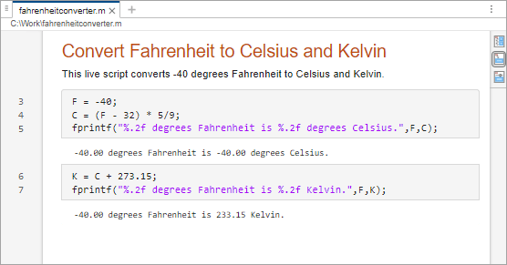
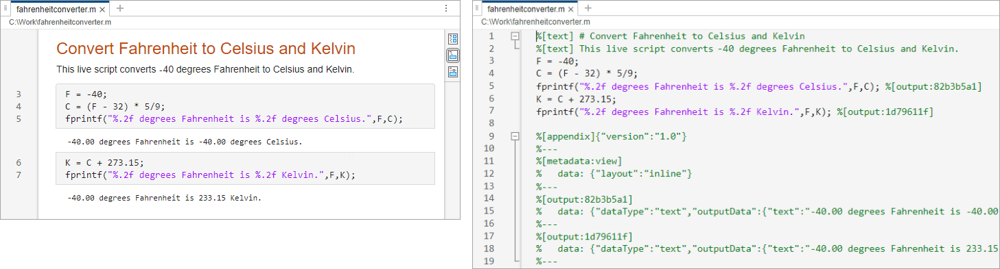
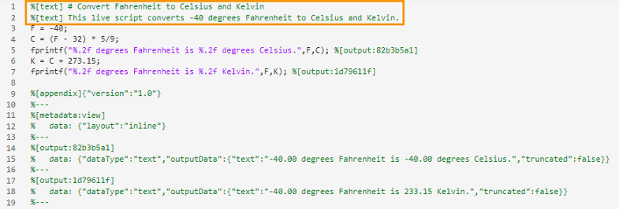
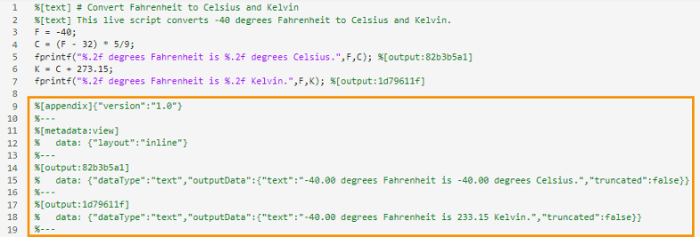
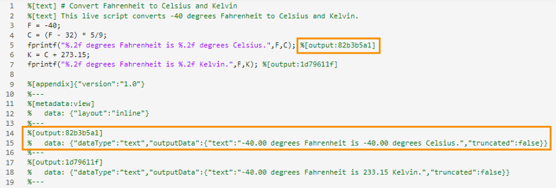
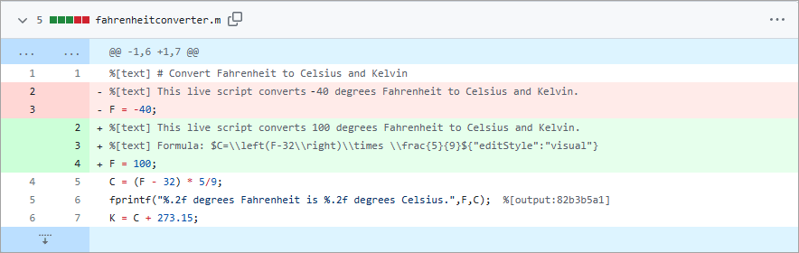

Live Code File Format (.m)
Starting in R2025a, the Live Editor supports a new plain text Live Code file format
(.m) for live scripts as an alternative to the default binary
Live Code file format (.mlx). The plain text format is based on the
standard MATLAB® code file format (.m) and supports all Live Editor
features, including output, formatted text, interactive controls, and tasks. Live
scripts saved in this format open in the Live Editor and behave like other live
scripts.

Benefits to Plain Text Live Code File Format (.m)
There are several benefits to saving live scripts using the new plain text Live Code file format:
Files open in external code editors — You can open live scripts saved using the plain text Live Code file format in any external text or code editor that supports plain text files.
Increased transparency — Files saved using the plain text file Live Code format do not trigger security concerns. One exception might be if the live script contains images and plots, which are saved as Base64 (ASCII-binary) strings in the plain text file.
Improved integration with source control — You can use external source control tools to compare and merge live scripts saved using the plain text file Live Code format.
Save Live Scripts as Plain Text
To save a live script using the plain text Live Code file format
(.m):
Go to the Live Editor tab, and in the File section, select Save > Save As.
Enter a name for your live script. If you are saving an existing live script using the plain text Live Code file format, enter a different name than the original filename to avoid shadowing issues.
Select
MATLAB Live Code File (UTF-8) (*.m)as the Save as type.Click Save.
By default, live scripts saved using the plain text Live Code file format
(.m) open in the Live Editor. To open the file as plain text
in the Editor, right-click the file in the Files panel and select Open
as Text.
Note
Editing a live script as plain text might prevent it from opening correctly in the Live Editor.
Change the Default Live Script File Format
By default, new live scripts are saved using the binary Live Code file format
(.mlx). To make the plain text Live Code file format the
default file format for live scripts, go to the Home tab,
and in the Environment section, click
Settings. Select MATLAB > Editor/Debugger, and in the Live script format section,
select M as the Default live script file
format.
Structure of Plain Text Live Code File
The Live Editor uses custom markup to save formatted text, generated output, interactive controls, and tasks as plain text. The Live Editor saves the custom markup in two places within the live script file:
Alongside the code as inline markup
At the bottom of the file in an appendix
For example, suppose that you have a live script,
fahrenheitconverter.m, saved using the plain text Live Code
file format. By default, when you open fahrenheitconverter.m, the
file opens in the Live Editor. To open fahrenheitconverter.m as
plain text in the Editor, right-click the file in the Files panel and select
Open as Text.
Notice that in both the Live Editor and Editor, the line number for the first code line is 3. The reason is that in live scripts saved using the plain text Live Code file format, each line of text accounts for one or more code lines in the saved file. In addition, because lines of text are saved as code comments in the file, inserting text between statements that span multiple code lines is not supported.

Inline Markup
The Live Editor uses inline markup to save text items, such as formatted text, tables, equations, and hyperlinks. For example, this live script contains markup for a title line and a normal text line.

Appendix
The Live Editor uses an appendix at the end of the file to save larger amounts of data that cannot be saved inline and to save file information that is not linked to a specific line number. For example, this live script contains an appendix with markup that saves the current view of the live script, as well as the two outputs that the live script creates.

Reference IDs
For features that require additional markup, the Live Editor uses inline markup with a reference ID to save basic feature information inline and link to additional markup in the appendix. When merging live scripts that contain differences in reference IDs, make sure that the inline reference ID and the reference ID in the appendix match in the merged result.

Markup Details
In live scripts saved using the plain text Live Code file format, the Live Editor saves custom markup as comments. In general, the Live Editor uses Markdown to save text items, such as formatted text, tables, images, and hyperlinks, and LaTeX commands to save equations.
This table provides more information about the custom markup used in the plain
text Live Code file format (.m).
| Markup Type | Markup Syntax |
|---|---|
Formatted text | Text is saved inline using the %[text] This is basic text
%[text] # This is a title
%[text] ## This is a header
%[text] This is **bold**, *italic*, `monospace`, and <u>underlined</u>
%[text]{"align":"center"} This block of text is center aligned
|
Table of contents | Table of contents is saved inline using the
%[text:tableOfContents]{"heading": "Table of Contents"} |
| Code example | Code examples are saved inline using the
Plain code example: %[text] ``` %[text] x = 1; %[text] y = "hello"; %[text] ``` MATLAB code example: %[text] ```matlabCodeExample %[text] x = 1; %[text] y = "hello"; %[text] ``` |
| Table | Tables are saved inline using the
%[text:table] %[text] | abc | def | %[text] | --- | --- | %[text] | 123 | 456 | %[text:table] |
| Image | Images are saved both inline and in the appendix. Syntax inline: %[text] this image:  Syntax in appendix: %[text:image:imageid]
% data: { ... }
%--- |
| Hyperlink | Hyperlinks are saved inline using the
%[text] web page: [MathWorks Website](https://mathworks.com) %[text] file: [Duck Duck Go](/path/to/file.txt) |
| Equation | Equations are saved as LaTeX commands inline using the
%[text] $x = 4^2${"altText": "equation alt text"} |
| Output | Output is saved using the Syntax inline: %[output:outputid] Syntax in appendix: %[output:outputid]
% data: { ... }
%--- |
| Control | Controls are saved using the
Syntax inline: %[control:controltype:controlid]{"position":[14,16]}Syntax in appendix: %[control:controltype:controlid]
% data: { ... }
%--- |
| Live Editor task | Live Editor tasks are saved using the
Syntax inline: %[task:taskid] Syntax in appendix: %[task:taskid]
% data: { ... }
%--- |
| Live script view | The current view of the live script is saved using the
%[metadata:view]
% data: {"layout":"inline","rightPanelPercent":40}
%--- |
Source Control
When using external source control tools, you can compare and merge live scripts
saved using the plain text Live Code file format (.m) directly
from the tool. Live scripts saved using the binary Live Code file format
(.mlx) can only be compared using the MATLAB Comparison Tool.
For example, in GitHub®, when you add a live script saved using the plain text Live Code file format to a repository, you can see the differences between each revision of the file.

Source Control Limitations and Workarounds
Some external source control tools have limitations around file size that might prevent the comparison of live scripts saved using the plain text Live Code file format:
GitLab® and GitHub throw an error and do not display the differences in a file if the file size is too big.
Perforce® tries to display the differences but might become unresponsive if the file size is too big. To avoid Perforce becoming unresponsive, you can try disabling the Show Inline Differences option.
For the best results, try using GitHub Desktop or Visual Studio Code. You also can reduce file size by disabling the saving of output to your files. To disable saving output, go to the Home tab, and in the Environment section, click Settings. Select MATLAB > Editor/Debugger > Saving and in the Output Save Options section, clear Save output to file. Alternatively, clear all output before submitting your files to source control.
For more information, see the documentation for your source control tool.